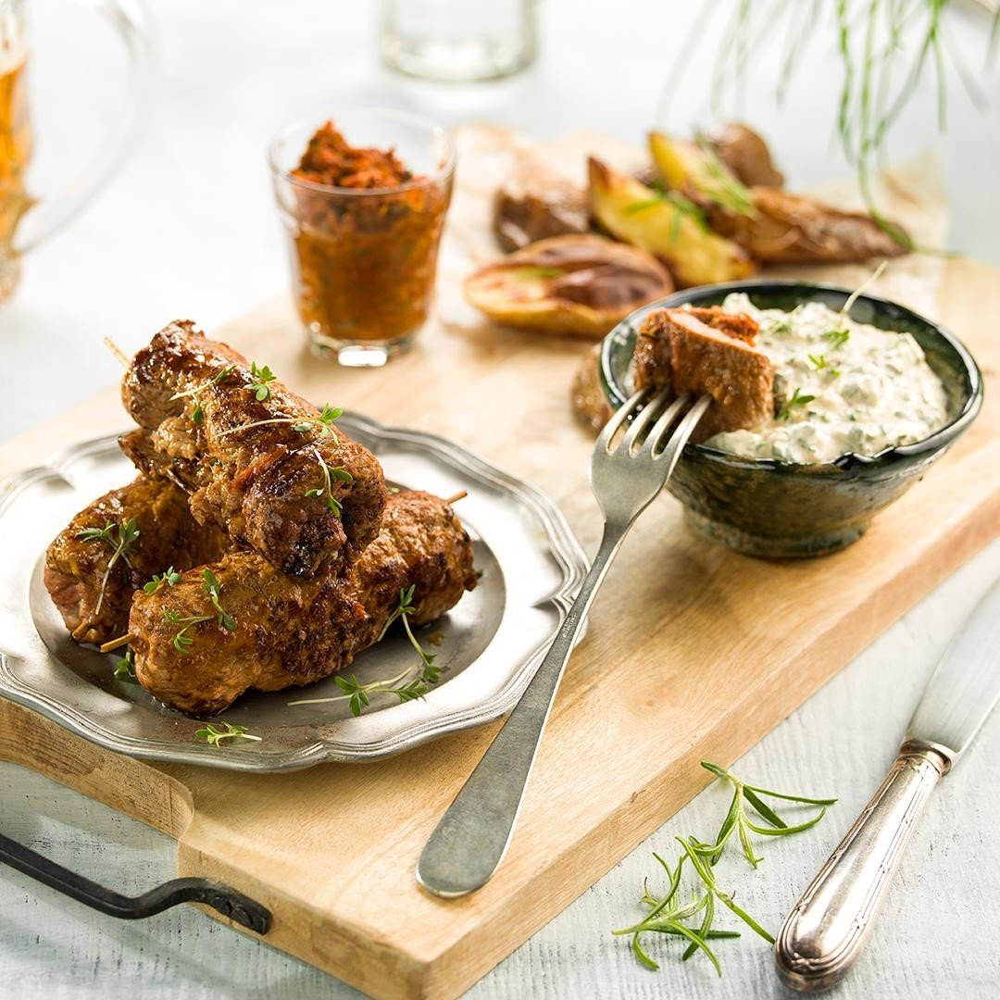

Bylinková omáčka podľa @komora_coopjednota — Normy Jedál
Chutné teľacie alebo hovädzie mäso s prekvapením vnútri. Recept na naše roládky s plnkou z pesta nájdete na bit.ly/roladky. Podávame s pečenými zemiakmi a bylinkovou omáčkou. Dobrú chuť.👌⠀
#komoragazdin #recept #obed #tipnaobed #hovadzie #telacie #bylinkovaomacka #pecenezemiaky #roladky #plnka #pecenie #dobruchut